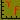
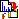
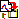
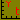
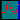

Le calcul de FFT est TOUJOURS effectué sans vérification d'aucune sorte. La variable temporelle est supposée être la première variable. La variable fréquentielle est appelée f (pour graduation des axes et utilisation dans la fonction filtre). Le résultat peut être aberrant si vos données ne respectent pas un minimum de précaution. Si l'option complément à zéro est activée, on complète les mesures effectuées par des zéros de manière à avoir un nombre de points égal à une puissance de 2 (c'est le mode de fonctionnement "normal" d'une FFT et c'est la valeur par défaut), sinon on effectue une INTERPOLATION (pour que l'interpolation soit correcte on doit être très LOIN de la limite de Shannon). On effectue la FFT sur le résultat.
Le menu local (clic droit) et la barre de boutons permettent :

variables : choix des variables à représenter. zoom : fonctionne uniquement sur l'axe des fréquences.
zoom : fonctionne uniquement sur l'axe des fréquences.
 copie le tableau des raies dans le presse-papiers pour récupération dans un traitement de texte.
copie le tableau des raies dans le presse-papiers pour récupération dans un traitement de texte.

copie le spectre dans le presse-papiers au format WMF pour récupération dans un traitement de texte.
copie de même le graphe temporel.
fonction du temps : affiche la fonction du temps correspondante. Fonctionne en bascule. On peut modifier la hauteur par glissement de la ligne séparant les deux graphes. On peut définir la zone sur laquelle s'effectue la FFT en glissant les lignes verticales.tableau : affiche le tableau de valeurs correspondant. Fonctionne en bascule. On peut modifier la largeur par glissement de la ligne séparant le tableau des graphes. Les phases affichées respectent la convention : signal réel=partie réelle de a.exp(jf).exp(jwt), autrement dit a.cos(jwt+f). La phase est donc celle d'un cosinus.
Le menu coordonnées : choix des variables à représenter.
période : recherche automatique (donc ne marche pas à tous les coups !) de la période.

sélection de tous les points dans l'espace temporel pour calculer la FFT.options : permet de choisir le type de fenêtrage, le nombre maximum d'harmoniques à afficher, l'ordre du lissage. Ces options agissent aussi sur les fonctions utilisant la FFT : filtre, harm, corr, env.
On peut choisir un curseur fréquence qui indique la valeur du point le plus proche du pointeur de la souris. S'il y a plusieurs grandeurs superposées, pour choisir la grandeur active cliquer sur le nom de celle-ci au sommet de l'axe des Y. La frappe de la touche F10 (ou le menu local "enregistrer la fréquence") permet de sauvegarder la valeur de la fréquence courant dans un paramètre. Après avoir cliqué sur "OK" dans la boite de dialogue, ces valeurs pourront être retrouvées dans la fenêtre "Grandeurs", onglet "Paramètres". Un clic garde l'état actuel comme référence et permet d'indiquer l'écart entre le curseur et la référence. Un deuxième clic désactive cette référence.
Conseils d'utilisation :
Mes conclusions PERSONNELLES : suite aux différents articles du BUP à ce sujet, je pense qu´il faut distinguer deux utilisations :
La boite liste permet de choisir entre différents modes :
Le curseur fréquence indique la valeur du point le plus proche du pointeur de la souris.
Créé avec HelpNDoc Personal Edition: Environnement de création d'aide complet